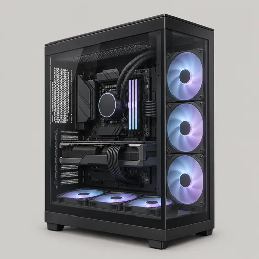

GTA 6 am PC: Was zu Anforderungen und 60 FPS bekannt ist
Du möchtest einen PC kaufen, auf dem GTA 6 später flüssig läuft. Das ist verständlich – nur fehlen dafür weiterhin entscheidende offizielle Angaben zur PC-Version. Hier erfährst du, was bestätigt ist und welche Kaufentscheidungen du trotzdem sinnvoll treffen kannst. Stand: 20. November 2026.

Gibt es offizielle GTA-6-PC-Anforderungen?
In den hier geprüften offiziellen Rockstar-Veröffentlichungen sind keine PC-Systemanforderungen für GTA 6 genannt. Rockstar meldete am 19. November 2026 die Veröffentlichung für PlayStation 5 und Xbox Series X|S. Auch die offizielle Plattformübersicht nennt diese Konsolen.
Damit fehlt eine belastbare Grundlage für eine konkrete PC-Empfehlung speziell für GTA 6. Die bestätigten Konsolenplattformen belegen weder einen bestimmten PC-Veröffentlichungstermin noch eine bestimmte benötigte Grafikkarte.
Wenn du online eine angeblich endgültige Liste mit Prozessor, RAM und Grafikkarte findest, prüfe die Originalquelle. Eine Einschätzung aus einem Video oder ein Vergleich mit Konsolenhardware ist keine offizielle Anforderungsliste von Rockstar.
Warum sich 60 FPS noch nicht seriös versprechen lassen
„60 FPS in GTA 6“ klingt eindeutig, lässt aber mehrere Fragen offen. Bei welcher Auflösung? Mit welchen Grafikdetails? Mit oder ohne Raytracing, Upscaling und zusätzlich erzeugte Zwischenbilder? Erst diese Angaben machen ein Leistungsziel vergleichbar.
Für eine überprüfbare Aussage brauchst du außerdem Messungen einer verfügbaren PC-Version. Selbst spätere Mindestanforderungen würden nicht automatisch 60 Bilder pro Sekunde mit deinen Wunscheinstellungen garantieren. Mindest- und empfohlene Anforderungen müssen immer im zugehörigen Kontext gelesen werden.
Auch der Speicherbedarf der Konsolenversion ist keine bestätigte Angabe für eine mögliche PC-Fassung. Plane deshalb nicht mit angeblich sicheren Zahlen, die lediglich von einer Plattform auf eine andere übertragen wurden.
Was solltest du tun, wenn du jetzt einen Gaming-PC brauchst?
Kaufe den Rechner zunächst für Spiele und Aufgaben, die du heute nutzen möchtest. Lege deinen Monitor, dein Budget und die gewünschten Einstellungen als Grundlage fest. Ein brauchbarer PC-Kauf muss sich nicht vollständig an einem Spiel orientieren, dessen PC-Anforderungen noch offen sind.
Prüfe bei einem neuen System gleichzeitig praktische Erweiterungsmöglichkeiten: Lässt sich später eine andere Grafikkarte einbauen? Sind passende Anschlüsse und Platz vorhanden? Kann Speicher ergänzt werden? Aufrüstbarkeit kann dir Spielraum geben, ist aber kein Versprechen, dass jede kommende Hardware unterstützt wird.
Wenn du allein für die Aufschrift „GTA-6-ready“ deutlich mehr ausgeben sollst, frage nach den Belegen. Ohne offizielle PC-Anforderungen und passende Tests ist das kein belastbarer Leistungsnachweis. Unsere Ratgeber zu Gaming-PC-Kosten und Ausstattungsvergleichen helfen dir bei einem Kauf für deinen heutigen Bedarf.
Wann ist Warten die bessere Entscheidung?
Wenn dein vorhandener PC alle aktuellen Aufgaben erfüllt und GTA 6 der einzige Anlass für einen Neukauf wäre, spricht viel dafür, zunächst konkrete PC-Informationen abzuwarten. Dann kannst du nach einer tatsächlichen Anforderung statt nach einer Vermutung auswählen.
Das bedeutet nicht, dass wir eine Preisentwicklung oder einen Veröffentlichungstermin vorhersagen können. Es bedeutet lediglich: Du verschiebst eine sehr gezielte Kaufentscheidung, bis die dafür benötigten Informationen vorliegen.
Als nächster belastbarer Schritt zählt eine offizielle Ankündigung zur PC-Version. Danach wären die zugehörigen Systemanforderungen und schließlich unabhängige Tests mit klar beschriebenen Einstellungen relevant.
Worauf du bei zukünftigen PC-Tests achten solltest
Vergleiche später nicht nur die durchschnittliche Bildrate. Interessant werden auch kurze Einbrüche, Nachladeruckler und die Leistung in unterschiedlichen Spielsituationen sein. Ein einzelner ruhiger Ausschnitt muss nicht für das gesamte Spiel stehen.
Achte außerdem darauf, welche Bildverbesserungsfunktionen aktiviert sind. Eine FPS-Zahl mit Zwischenbildberechnung ist anders einzuordnen als vollständig neu berechnete Spielbilder. Die Grundlagen findest du in unserer Erklärung zu Grafikkartenfunktionen.
Bis solche Informationen verfügbar sind, ist die ehrliche Antwort auf „Welcher PC schafft GTA 6 mit 60 FPS?“ offen. Für deinen heutigen Kauf helfen konkrete Anforderungen deiner bereits verfügbaren Spiele deutlich weiter.